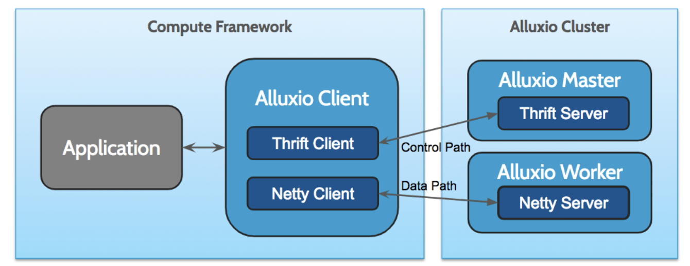
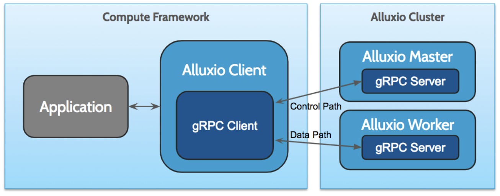

从Apache Thrift迁移到gRPC：Alluxio视角
Alluxio技术博客翻译系列——Moving From Apache Thrift to gRPC A Perspective From Alluxio
本文也会发布在微信公众号“Alluxio”上，欢迎关注该微信公众号。
作为Alluxio 2.0版本的一部分，我们将RPC框架从Apache Thrift变为gRPC。在本文中，我们将讨论这一变化背后的原因以及我们在此过程中学到的一些经验。
Alluxio是一个开源的分布式虚拟文件系统。作为数据访问层，Alluxio使得大数据和ML应用程序能够利用数据本地性和许多其他特性，处理来自多个异构存储系统的数据。Alluxio基于master/worker架构构建，其中master处理元数据操作，worker处理读取和写入数据的请求。在Alluxio 1.x中，客户端和服务器之间的RPC通信主要是基于Apache Thrift。Thrift使得我们能够在简单的IDL文件中定义Alluxio服务接口，并使用Thrift编译器生成的原生Java接口实现客户端绑定。然而，随着不断开发Alluxio的新功能和改进Alluxio，我们面临着一些挑战。
Apache Thrift的局限性
Thrift最大的缺点之一，是缺乏对大规模数据流的支持，而支持大规模数据流对于Alluxio至关重要，因为Alluxio作为分布式文件系统要能够提供数据密集型工作负载。在Alluxio 1.x中，我们在Netty上实现了一个轻量级数据流框架作为解决方案，Netty是一个基于Java的异步事件驱动的网络框架。以下是RPC客户端和服务器的架构说明：

虽然Netty提供了高性能和灵活的网络API，但其编程接口相对底层，并且需要我们在其上实现许多更高层的重要功能，例如流控制和文件系统身份认证。这不仅使实现新的服务端点的成本更高，而且还大大增加了Alluxio客户端的复杂性，使得为新语言提供客户端绑定变得更加困难。
这种架构还需要我们维护两个网络技术栈：使用Thrift构建的master控制RPC服务和使用Netty构建的worker数据/控制RPC服务。以两种不同的方式定义服务会使代码库难以维护和理解。对于每个跨服务使用的常见功能，我们还需要提供两个实现，这为工程团队增加了更多的工作负担。
gRPC的优势
gRPC是由Google开发的高性能开源RPC框架。自2015年发布以来，gRPC日趋成熟，并成为跨语言RPC通信最受欢迎的选择之一。gRPC有许多很棒的特性，我们从中受益最多的是：
- 内置流式RPC支持：这意味着我们可以使用相同的RPC框架来处理控制路径上的一次性RPC调用以及通过分块进行数据传输。这将极大地帮助我们统一网络代码路径并简化逻辑。
- 拦截器(interceptor) API：gRPC 拦截器 API提供了一种向多个服务端点添加通用功能的强大方法。这使我们可以轻松实现master接口和worker接口共享的运行状况检查和身份验证。
- 内置流量控制和TLS支持：gRPC基于HTTP / 2协议构建，具有很多强大的特性，其中许多特性是我们以前必须在Netty上实现的。这有助于使得客户端更简单，并且可以轻松实现更多语言绑定。
- 优秀的社区支持：作为一个开源项目，gRPC拥有良好的社区支持和维护，正在快速发展。gRPC的文档也很丰富，对用户很有帮助。
实现
我们从去年开始研究迁移。我们通过初始设计和原型来解决一些技术挑战，以及通过早期的基准测试来了解性能。下图显示了使用gRPC的新的统一网络技术栈：

替换RPC框架是非常重要的工作。我们添加、重构了许多代码，最重要的是，我们简化了代码来适用新的API。我们在实现阶段遇到了一些挑战。
我们遇到的其中一个问题与gRPC通道的释放有关。当通道并发地关闭时，一些底层HTTP / 2消息可能会在客户端和服务器之间往复（这看起来像是这个问题的加重版）。这种陈旧消息的出现次数变多，可能会导致级联性能下降，尤其是在快速回收通道的测试环境中。我们观察到，将 gRPC通道的关闭序列化，能够解决这个问题。
另一个挑战是缺乏对Java SASL身份验证的支持。虽然gRPC附带了对TLS和OAuth的支持，但遗憾的是，它没有提供使用SASL身份验证框架保护RPC的方法。为了解决这个问题，通过实现专用的身份验证服务端点并使用拦截器初始化身份验证握手，我们构建了我们自己的身份验证层。
使用gRPC作为Java模块依赖进行构建也可能会导致一些问题，特别是当它内置到Alluxio客户端jar包中时，此时它将被加载到第三方应用程序JVM中。由于gRPC依赖于非常流行的protobuf模块，因此将gRPC和protobuf打包到我们的客户端jar包中很容易导致protobuf版本与依赖于protobuf的应用程序冲突。我们通过在Alluxio客户端中重新定位gRPC和protobuf模块来解决这个问题。
除了要处理功能性挑战外，还需要花费大量时间进行性能调优。以下是我们学到的经验：
- 选择正确的执行程序：gRPC客户端/服务器初始化期间提供的执行程序在服务器可以实现的请求吞吐量中起着重要作用。gRPC请求并不是绑定到专用线程，而是分发给执行程序线程池。我们观察到了与默认缓存执行程序线程池的一些显著争用。为了缓解这种情况，我们尝试了几种不同的执行程序。我们试过
FixedThreadPool，它能提供良好的阻塞RPC性能。但是，对于非阻塞RPC，它的执行性能令人无法接受，因为它只使用单个任务队列。我们也尝试过ForkJoinPool，它在内部将工作分配到许多队列中，并且通过“偷工作(work stealing)”来维持队列之间的平衡。对于非阻塞RPC，我们在使用ForkJoinPool时性能最佳。对于阻塞RPC，它提供了一个托管阻塞API，以便在worker被阻塞的情况下接收提示，在使用它时我们能够实现非常接近FixedThreadPool吞吐量的吞吐量。最终，我们选择了ForkJoinPool，而不是FixedThreadPool，因为ForkJoinPool在Alluxio较常见的使用场景中通常有着更好的吞吐量。
执行程序的实验主要集中在提高处理元数据请求的吞吐量上。我们还做了很多工作来提高数据传输性能。以下是使用gRPC高效传输数据的一些技巧：
- 使用多个通道实现最大吞吐量：虽然大多数短RPC调用都受益于多路复用，但数据传输需要利用所有网络带宽，而这是单个连接所不具备的。根据gRPC团队的建议，我们转而使用多个通道来最大化我们的数据传输吞吐量。
- 使用更大的块大小：发送每条消息都会产生一些开销，例如消息头和上下文切换。对于相同数量的数据，每个块越小，管道必须处理的块越多，这反过来会引入更多的开销。我们最终使用相对较大的块大小来最小化这种影响。
- 不要丢弃Netty：即使所有数据都是通过gRPC发送的。鉴于gRPC没有公开能够处理Netty ByteBuf的公共接口，我们在gRPC服务端点的早期实现中切换到使用Java NIO ByteBuffer。即使我们使用了堆外缓冲区，也还是引入了一些显著瓶颈。这里学到的教训是不要因为gRPC没有公开Netty缓冲区的接口而摆脱Netty。Netty提供了一些非常有效的API来管理缓冲区，这将使gRPC管道之外的东西依然保持迅速。
- 实现零复制：我们观察到切换到gRPC的另一个开销是过多的缓冲区复制。这是因为默认情况下，gRPC使用protobuf进行消息序列化，这会引入额外的复制操作。目前还没有能在无需经过protobuf序列化或抛弃生成好的RPC绑定的情况下存取gRPC原始缓冲区的正式API。我们最终使用了gRPC用户组的一些想法，实现了一种零复制的解决方法。
- 使用手动背压控制：gRPC Java SDK中的背压控制(back pressure control)是通过流观察器(stream observer)的isReady标志和onReady事件提供的。一旦缓冲区中的数据小于32KB，就会触发onReady事件。这是一个相对较小的缓冲区大小，并且可能会导致一些争用，因为发送方一直在等待从缓冲区中删除数据，特别是当我们增加了块大小后，这种争用更加明显。不幸的是，截至目前，我们无法调整缓冲区大小。我们最终实现了手动背压控制，通过该控制我们能够在吞吐量方面实现更多改进。
结论
Thrift是一个快速可靠的RPC框架，可以为Alluxio 1.x中的元数据操作提供有力支持。但它在处理流数据方面的局限性使得我们开始寻找更好的替代方案。gRPC提供了一些很好的特性，可以帮助我们构建更简单、更统一的API层。在本文中，我们讨论了从Thrift迁移到gRPC的一些经验教训，包括性能调优技巧，这些技巧帮助我们实现了一次性RPC调用和数据流的优秀性能。如果你将gRPC视为构建高性能服务的选项，我们希望本文会有所帮助。如果想了解有关我们如何构建Alluxio的更多文章，请查看我们的博客。